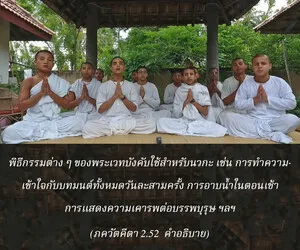

ผู้เป็นศัตรูของคัมสะ เช่นนี้ ทำให้ข้าปราศจากพันธนาการแห่งบาปทั้งมวล ข้าคิดว่าเท่านี้ก็เพียงพอแล้วสำหรับตัวข้า”- ชรีมาดะเวนดระ พุรี")

เมื่อสติปัญญาของเธอได้ผ่านออกมาจากป่าทึบแห่งความหลง เธอจะเป็นกลางต่อสิ่งที่ได้ยินมาแล้วทั้งหมด และสิ่งที่จะได้ยินทั้งหมด

มีตัวอย่างที่ดีมากมายในชีวิตสาวกผู้ยิ่งใหญ่ขององค์ภควานฺ ด้วยการอุทิศตนเสียสละรับใช้แด่องค์ภควานฺทำให้ท่านไม่สนใจใยดีต่อพิธีกรรมของพระเวท เมื่อผู้ใดเข้าใจองค์กฺฤษฺณ และความสัมพันธ์ระหว่างตนเองกับองค์กฺฤษฺณอย่างแท้จริง โดยธรรมชาติเขาจะไม่สนใจกับพิธีกรรมเพื่อผลประโยชน์ทางวัตถุ แม้จาก พฺราหฺมณ ผู้มีประสบการณ์ ศฺรี มาธเวนฺทฺร ปุรี สาวกและอารชารยะผู้ยิ่งใหญ่ในสายของสาวกกล่าวว่า
สนฺธฺยา-วนฺทน ภทฺรมฺ อสฺตุ ภวโต โภห์ สฺนาน ตุภฺยํ นโม
โภ เทวาห์ ปิตรศฺ จ ตรฺปณ-วิเธา นาหํ กฺษมห์ กฺษมฺยตามฺ
ยตฺร กฺวาปิ นิษทฺย ยาทว-กุโลตฺตํสสฺย กํส-ทฺวิษห์
สฺมารํ สฺมารมฺ อฆํ หรามิ ตทฺ อลํ มเนฺย กิมฺ อเนฺยน เม
“โอ้ การสวดมนต์ของข้าวันละสามครั้ง จงเจริญ! โอ้ ข้าขอแสดงความเคารพแด่การอาบน้ำ โอ้ เทวดา โอ้ บรรพบุรุษ โปรดให้อภัยแด่ข้าที่ไม่สามารถแสดงความเคารพแด่ท่าน ไม่ว่าจะนั่งอยู่ที่ไหนข้าจะระลึกถึงแต่ผู้สืบราชวงศ์อันยิ่งใหญ่แห่งราชวงศ์ ยทุ (กฺฤษฺณ) ผู้เป็นศัตรูของ กํส เช่นนี้ทำให้ข้าปราศจากพันธนาการแห่งบาปทั้งมวล ข้าคิดว่าเท่านี้ก็เพียงพอแล้วสำหรับตัวข้า”
พิธีกรรมต่างๆของพระเวทบังคับใช้สำหรับนวกะ เช่น การทำความเข้าใจกับบทมนต์ทั้งหมดวันละสามครั้ง การอาบน้ำในตอนเช้า การแสดงความเคารพต่อบรรพบุรุษ เป็นต้น หากเราอยู่ในกฺฤษฺณจิตสำนึกอย่างสมบูรณ์และปฏิบัติตนรับใช้องค์ภควานฺด้วยความรักทิพย์ เราจะไม่สนใจใยดีต่อกฎเกณฑ์เหล่านี้ เพราะว่าเราได้บรรลุถึงความสมบูรณ์แล้ว หากสามารถบรรลุถึงระดับความเข้าใจด้วยการรับใช้องค์ภควานฺ ศฺรีกฺฤษฺณเราไม่จำเป็นต้องปฏิบัติการบำเพ็ญเพียร และการบูชาต่างๆ ที่แนะนำไว้ในพระคัมภีร์อีกต่อไป ในทำนองเดียวกัน หากว่าเราไม่เข้าใจจุดมุ่งหมายของพระเวทว่าให้เข้าถึงองค์กฺฤษฺณและมัวแต่ปฏิบัติตามพิธีกรรมต่างๆ เราจะสูญเสียเวลาไปโดยเปล่าประโยชน์กับการปฎิบัติสิ่งเหล่านั้น บุคคลในกฺฤษฺณจิตสำนึกข้ามพ้นขีดจำกัดของ ศพฺท-พฺรหฺม หรือขอบเขตแห่งพระเวทและอุปนิษทฺ